- 简介
- 地理气候
- 旅游景点
- 著名人物
- 特色美食
正定县位于河北省西南部，华北平原中部的冀中平原，古称常山、真定，历史上曾与北京、保定并称“北方三雄镇”，是国家历史文化名城，中国民间艺术之乡，也是百岁帝王赵佗、常胜将军赵云故里，中国（河北）自由贸易试验区正定片区所在地。 正定县位于东经114°23′—114°42′，北纬37°58′—38°21′之间，北距首都北京258千米，距天津新港350千米，东距黄骅港300千米，西距太原160千米，南与省会石家庄市市区相接。境内有正定国际机场、高铁、动车，京珠、京昆、石黄高速公路，坐落境内的石家庄正定国际机场已开通20多条国内外航班。截至2010年，正定有国家级文物保护单位9处，省级文物保护单位6处。 2020年4月，正定县被河北省体育局评选为“2019年度体育工作最佳县（市、区）”。
- 旅游景点
- 三山
- 九楼
- 四塔
- 八大寺
- 二十四座金牌坊
- 了解更多
-
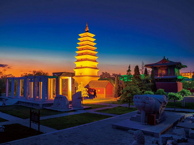
正定现存四座名塔，依次为凌霄塔、华塔、须弥塔、澄灵塔，凌霄塔是正定四塔中最高大者。 因其巍峨挺拔、直插云际，故名凌霄。又因塔身多系木结构，当地百姓俗称木塔。
-
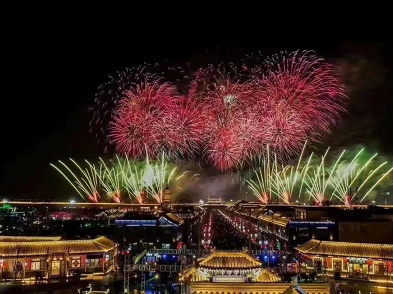
正定灿烂的的烟花表演，“满天银菊溅花雨，擎天银柱耀苍穹”！绚丽的焰火把夜空描绘得花团锦簇、五彩缤纷。耀眼的星光伴随着欢快的音乐，为观众打造了一场超震撼的视觉盛宴
-
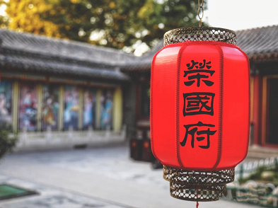
荣国府是以明末清初文化为背景的仿古建筑群。是根据中国古典名著《红楼梦》中所描绘的“荣国府”设计和建造的 。主要景点有荣国府景区、宁荣街景区、曹雪芹纪念馆等景观组成。
-
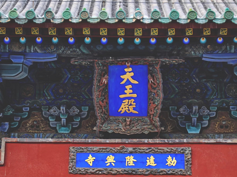
天王殿为正定隆兴寺第一重殿，为宋代建筑，规模宏大，十余座殿阁分布在中轴线及其两侧，高低错落，是国内现存最完整的宋代建筑群。之后历代均有修复，大殿内整体色调为红色，修缮后更加美丽壮观
-
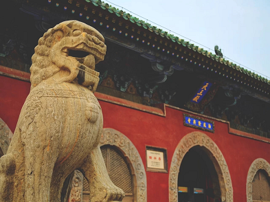
隆兴寺，别名大佛寺，是中国国内保存时代较早、规模较大而又保存完整的佛教寺院之一。寺院占地面积82500平方米，大小殿宇十余座，高低错落，主次分明，是研究宋代佛教寺院建筑布局的重要实例。
- 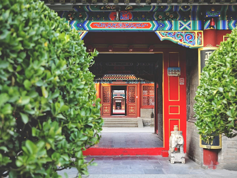
荣国府景区,为一正两厢鹿顶钻山形式的多进四合院。分中、东、西三路,中路依次是荣府大门、外仪门、向南大厅、内仪厅等，采用了宫廷式彩绘，东西两路为内宅院，采用了苏式彩绘。西路有西角门、垂花门等
- 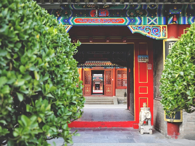
著名人物
- 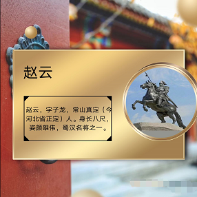
- 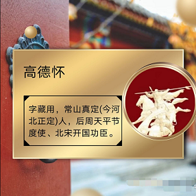
- 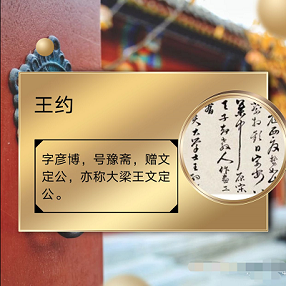
- 特色美食
- 八大碗
- 郝佳排骨
- 马家鸡
- 铁锅焖面
- 王家烧麦
- 查看更多>>
- 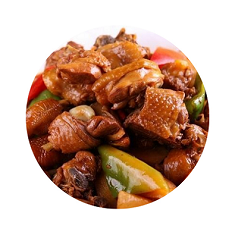
- 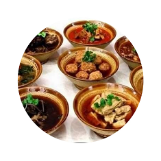
- 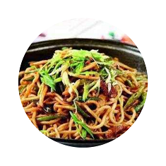
- 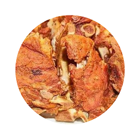
- 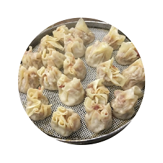
冀ICP备000号、2019-2021版权所有